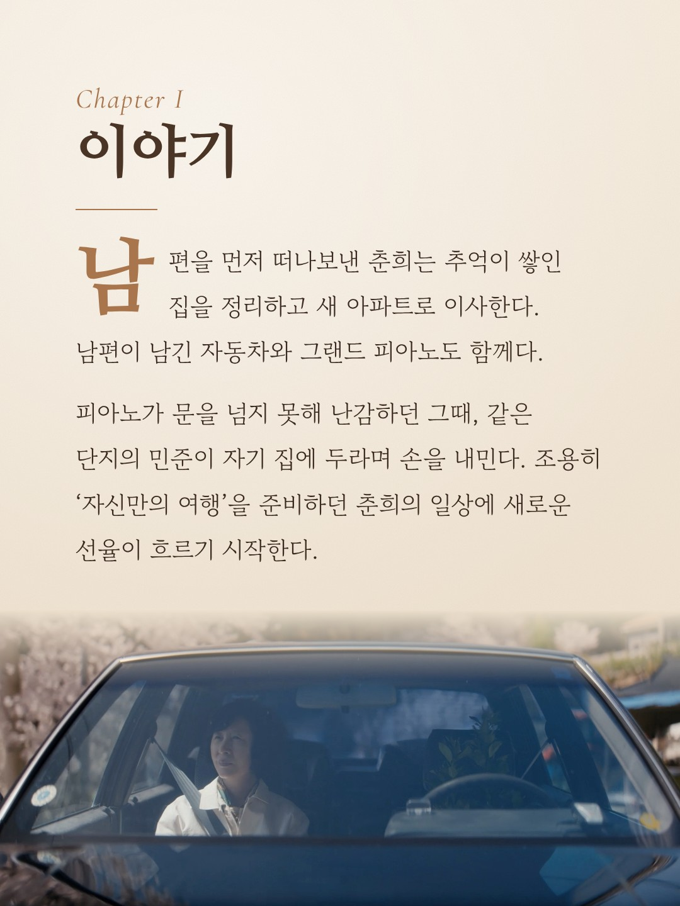
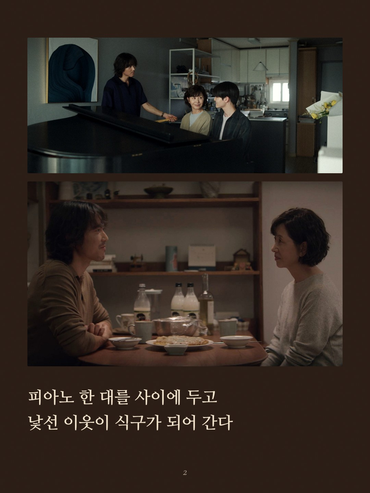
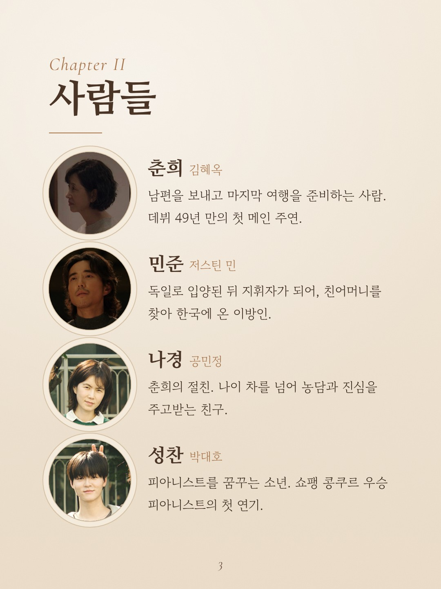
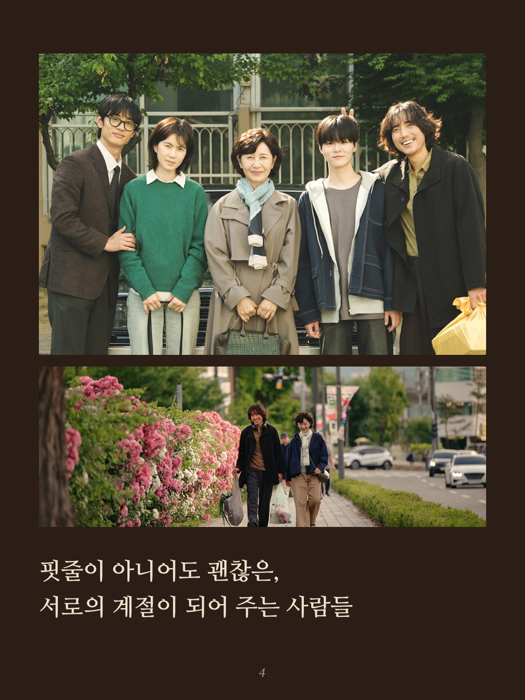
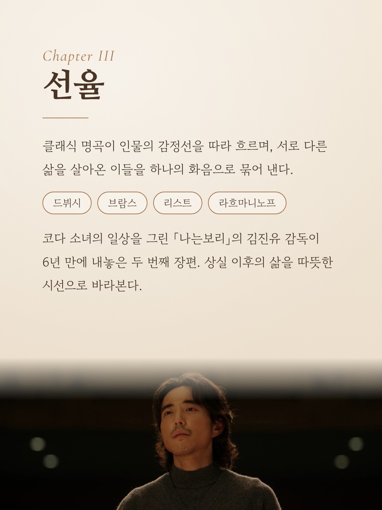
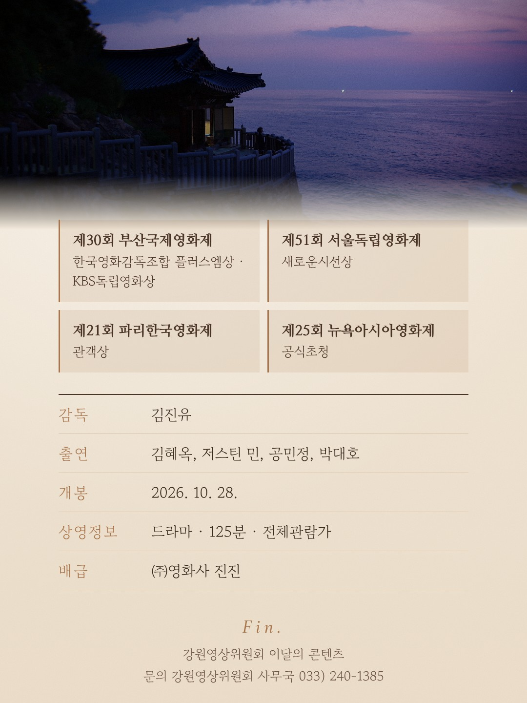
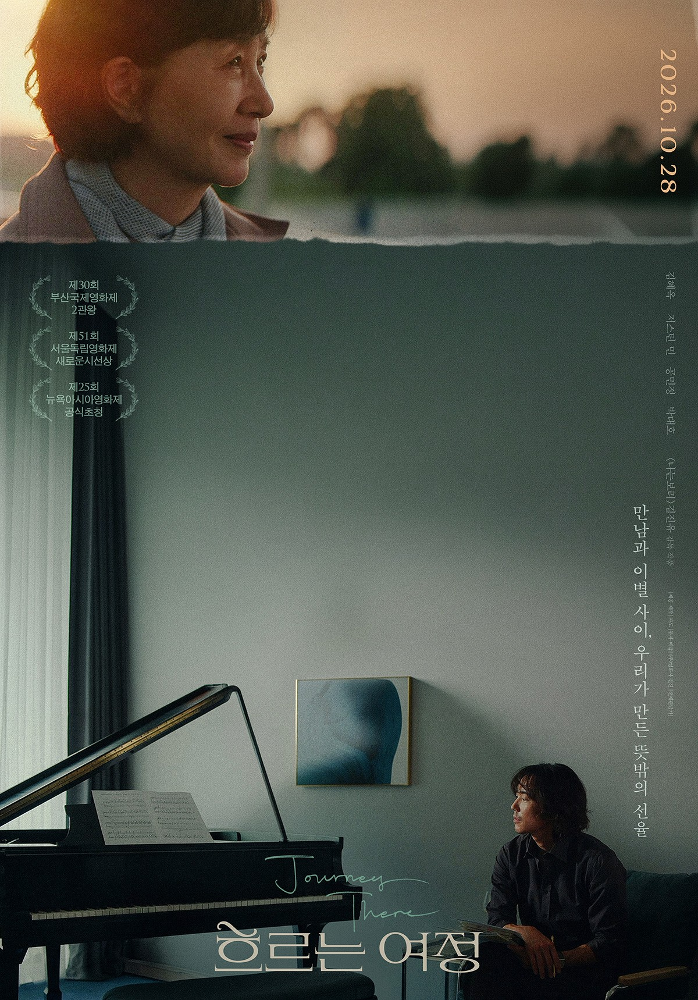

MONTHLY CONTENT · 2026. 11
이달의 콘텐츠 <흐르는 여정>
아래 이전·다음 버튼을 누르거나, 화면을 옆으로 밀어서 넘겨보세요.
‹ 이전 01 / 09 다음 ›
영상이 보이지 않으면 여기를 눌러 유튜브에서 보기 →
‹ 이전 02 / 09 다음 ›

‹ 이전 03 / 09 다음 ›

‹ 이전 04 / 09 다음 ›

‹ 이전 05 / 09 다음 ›

‹ 이전 06 / 09 다음 ›

‹ 이전 07 / 09 다음 ›

‹ 이전 08 / 09 다음 ›

‹ 이전 09 / 09 처음으로
01 표지 02 예고편 03 이야기 04 장면 1 05 사람들 06 장면 2 07 선율 08 작품 정보 09 포스터
예고편 보러 가기 →